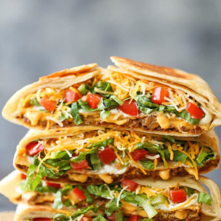

Crunchwrap

Description
A home-made version of a Taco Bell classic. Except completely homemade and made so much more healthier! Get your fix now!
Ingredients (yields 4 servings)
- 2 tablespoons olive oil, divided
- 1 pound ground beef
- 1 (1.25-ounce) package taco seasoning
- 4 (12-inch) flour tortillas
- 1/2 cup nacho cheese
- 4 tostada shells
- 1/2 cup sour cream
- 2 cups shredded lettuce
- 1 Roma tomato, diced
- 1 cup shredded Mexican blend cheese
Steps
- Heat 1 tablespoon olive oil in a large skillet over medium high heat. Add ground beef and cook until beef has browned, about 3-5 minutes, making sure to crumble the beef as it cooks; stir in taco seasoning. Drain excess fat; set aside.
- Heat tortillas according to package instructions.
- Heat nacho cheese according to package instructions.
- Working one at a time, place ground beef mixture in the center of each tortilla. Top with nacho cheese and tostada shell. Spread sour cream in an even layer over the tostada shell; top with lettuce, tomato and cheese. Repeat with remaining tortillas.